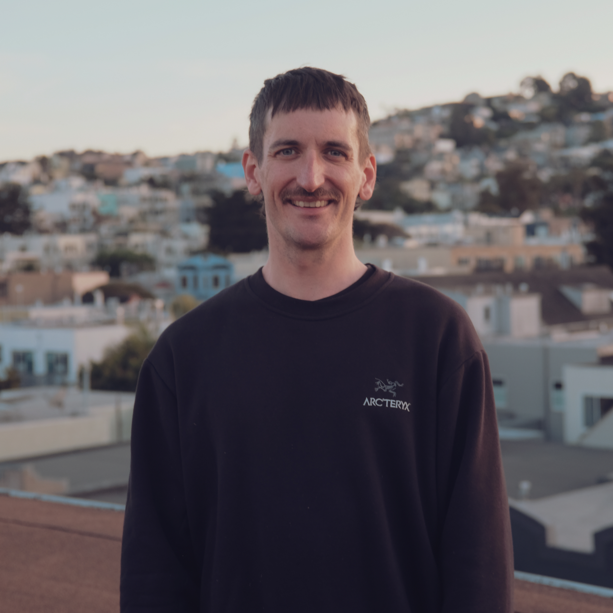
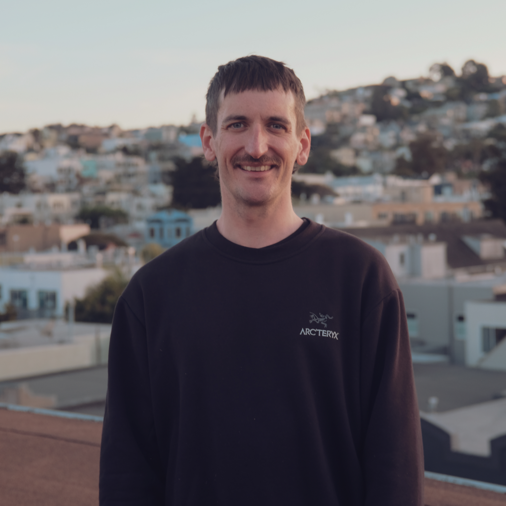

2025
Develop Film Online
React/Node.JS/HTML/CSS GitHub LinkDeveloped a web platform with React frontend and Node.js backend using the OpenAI API. Features include film developing guides, interactive film chemistry timers and AI driven critique of user uploads.

 
